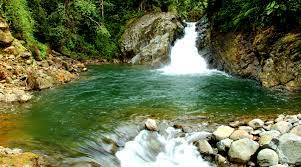
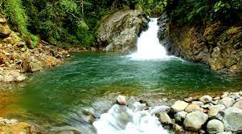

LAGUNA DE COLTA
-

-
Otro Nombre
Kulta Kucha (Laguna del Pato)
Ubicación
Cantón Colta de la provincia de Chimborazo
Latitud y Longitud
-1.7417427 / -78.7529783
Tipo de Laguna
Laguna de Agua Dulce
Origen
Formado por el bloqueo del río Colta por una corriente de lava.
Superficie
275 hectáreas.
Extensión
2,8 km de largo y 1 km de ancho.
Profundidad Máxima
3,5 m.
Altitud
3420 msnm
Ancho Máximo
1,1km
Temperatura
Oscila entre los 12°C y los 15°C
Actividades que se Practican
Caminatas, cabalgatas, fotografía, paseos en botes, camping, y muy cerca, se puede observar a los indígenas realizando labores agrícolas que hacen parte de la convivencia comunitaria.
Advertencia
No apto para personas con hipertensión o problemas respiratorios.
Fauna
Compuesto principalmente por: 20 especies de aves como patos (mayor cant. son de la familia anatidae), garzas, gorriones, mirlos, gaviotas, garcetas. 3 especies de peces e incluso un pequeño camarón andino. En las orillas hay ovejas, alpacas y llamas en las pampas verdes. 19 especies representan preocupación menor y el ave zambullidor plateado está en estado vulnerable.
Flora
En la laguna: La totora (planta herbácea perenne acuática) La mayor parte de la laguna está rodeada por totora, pero el resto se encuentra bastante alterado. Hay presencia de tierras agrícolas, especies exóticas como el eucalipto. Alrededores: Árboles de marco, quishuar, yagual, aliso y otras variedades de árboles nativos.
Propuestas para Preservación del Ambiente
Eco-reserva: Es importante preservar la anidación del ave zambullidor, por lo que sólo se puede observar desde lejos y con prismáticos, cuando el clima lo permita. Puede tener una temporada de reproducción extensa, desde el inicio de la primavera hasta mediados del otoño.
Zonas de amortiguamiento: Con el objetivo de evitar que los cultivos no sequen el agua del lago y así evitar que la flora y fauna tenga espacio suficiente dentro del agua para subsistir.
Mejorar el sistema de riego: El agua en este lago es usada por los habitantes para su uso y agricultura. Debido a la presencia de cultivos, habría que optimizar el sistema de riego que no solo beneficia a la misma agricultura, sino también al lago por la mínima pérdida de líquido.


 
